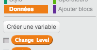

Atelier Scratch
Café numérique d'Arlon
Alexis Vandendaele [☰]
Gildas Cuisinier [☰]
Wilfried Trombini [☰]
Ce que l'on va tenter de faire
Ce que l'on va utiliser
Scratch
Scratch A Bloc
Demo
Comment procéder ?
- Mettre en place le décor
- Faire bouger la grenouille
- Mettre en place la condition de victoire
- Mettre des obstacles
- Ajouter des vies
- Ajouter des niveaux
Mettre en place le décor
La première chose à faire est de mettre en place le décor du jeu !
- Le fond d'écran : la route
- Notre héro : la grenouille
Comment faire
Comment faire bouger la grenouille
Pour déplacer la grenouille, il faut savoir si une touche flèche est pressée.
Si oui, on déplace la grenouille.
Répeter tout le temps
Pour répérer tout le temp, on utilise

Celui-ci se trouve dans les Contrôles
Si .... alors
Dans scratch, pour effectuer une action lorsqu'une condition est vérifié, on utilise ce composant :

Celui-ci se trouve dans les Contrôles
Pression d'une touche
La condition qui permet de vérifier qu'une touche est pressée est faite via ce composant :

Celui-ci se trouve dans les Capteurs
Déplacer un grenouille
Déplacer la grenouille revient à modifier son abscisse (x) ou son ordonnée dans la fenêtre :
Ces composants se trouvent dans les Mouvements
Déplacer à un endroit précis
Pour déplacer la grenouille à un endroit en particulier
Celui-ci se trouve dans les Mouvements
Demo
Proposition
Comment gagner ?
La grenouille gagne lorsqu'elle arrive au dessus de l'écran
Il faut donc vérifier si son ordonnée est supérieur à la ligne supérieure.
Si .... alors
Dans scratch, pour effectuer une action lorsqu'une condition est vérifié, on utilise ce composant :
Celui-ci se trouve dans les Contrôles
Plus grande que ..
Afin de vérifier qu'une valeur est plus grande qu'une autre, on utilise ce composant
Ce composant se trouve dans les Opérateurs
Ordonnée
Le composant qui permet de connaitre l'ordonnée est le suivant :
Ce composant se trouve dans les Mouvements
Afficher un message
Afin d'afficher un texte, on utilise ce composant :
Ce composant se trouve dans les Apparences
Compter les points
Afin de compter les points, il faut créer une variable :
Ensuite, pour ajouter un point, on utilise
Ces composants se trouvent dans les données
Demo
Proposition

Ajoutons des obstacles
Nous allons ajouter une voiture
Celle-ci va attendre un peu et partir de tout à gauche et avancer jusqu'a droite.
Afficher ou cacher la voiture
Afin de cacher ou de montrer la voiture, on peut utiliser ces composants
Ces composants se trouvent dans les Apparences
Attendre
Afin d'ajouter une pause de 1 ou plusieurs secondes, nous utilisons ce composant :
Ces composants se trouvent dans les Contrôles
Un nombre aléatoire
Pour générer un nombre entre 1 ou 5 secondes, ce composant sera utilisé
Ces composants se trouvent dans les Opérateurs
Jouer un son
Pour jouer un son :
Ces composants se trouvent dans les Sons
Demo
Voiture touchée?
Pour savoir si la grenouille touche un voiture, on utilise
Ces composants se trouvent dans les Capteurs
Fin du jeu
Pour arrêter le jeu un fois qu'on a perdu
Ce composant se trouve dans les Contrôles
Demo
Plusieurs tentatives, s'il vous plait
On va maintenant ajouter la notion de vie, la grenouille aura 3 vies.
Il faut donc modifier le traitement quand elle se fait écraser
- Réduire une vie si la grenouille
- Si le nombre de vie = 0, alors le jeu se fini
Amélioration graphique / sonore
Afin de rendre le jeu plus réaliste, nous allons changer l'image représentant la grenouille quand elle se fait écrasée. Nous allons également ajouter un coassement
Changement d'image
Pour changer la représentation de la grenouille, nous allons changer son costume :
Ces composants se trouvent dans les Apparences
Demo
Proposition
C'est trop facile ! Plus vite !
Le jeu est presque fini ! Nous allons maintenant ajouter la notion de niveau, plus on avance dans les niveau, plus la voiture avancera vite !
Demo
Proposition Grenouille
Proposition Voiture